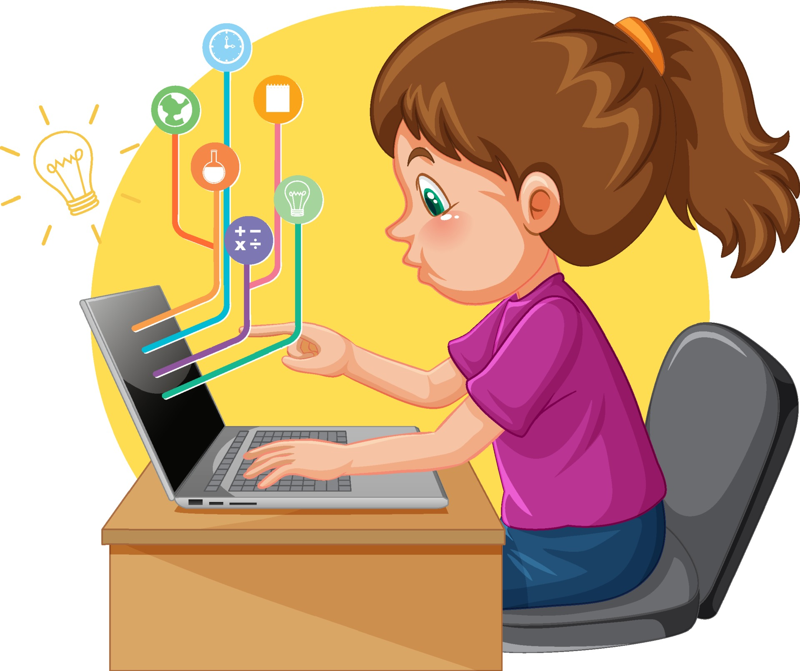

Aprendizaje de programación en los primeros años de vida
¿Qúe beneficios tiene?
- ✔️ Ayuda a entender el funcionamiento de los dispositivos que usamos a diario: descubriendo cómo funciona la tecnología se pueden comprender mejor todas sus posibilidades.
- ✔️ aprendiendo a programar se adquiere conocimientos de vital importancia en la actualidad y de mayor relevancia aún en el futuro. En las tempranas edades es común enfrentarse a bloqueos y frustraciones diariamente, aprendiendo a programar en edades tempranas, permite sobreponerse a estas frustraciones con un esfuerzo menor, lo que será muy útil a futuro.
- ✔️ para programar es necesario desarrollar el pensamiento computacional, un tipo de pensamiento que estructura la mente y ordena las ideas. Esto permite dividir un problema grande en problemas más pequeños.
- ✔️ Al programar se crea algo de la nada. La programación permite desarrollar la imaginación para innovar y ver su aplicación en muchas disciplinas diferentes.
- ✔️ Es una manera de aprender jugando: permite experimentar, compartir, razonar y entender cómo están hechas las cosas para posteriormente hacer sus propias creaciones. Aprendiendo a programar se pasa de ser meros espectadores a creadores.
- ✔️ Trabajo en equipo: La programación ayuda en la toma de decisiones y en el trabajo en equipo, pues programar se apoya en el trabajo colaborativo en el que cada quien desempeña un rol y aporta algo a los demás.